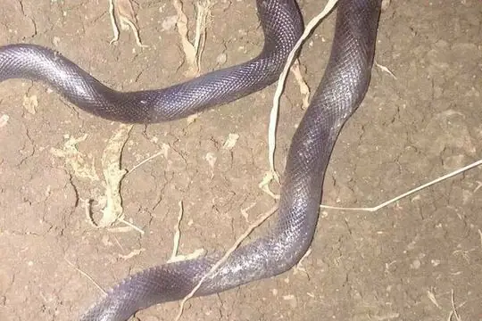

Snakes of Sudan
80 living snake species are recorded in Sudan in SnakeList: 36 venomous and 44 non-venomous, from 11 families.
- 80living species
- 36venomous
- 44non-venomous
- 11families
These totals count the unique living snake species SnakeList records in Sudan. A species counts if it is recorded anywhere in the country, so not every snake lives in every part of it.
Species
Showing 80 species
- No photo yetAdler's Worm SnakeMyriopholis adleri
 African CobraNaja pallida
African CobraNaja pallida- No photo yetAfrican Dwarf SnakeEirenis africanus
 African Rock PythonPython sebae
African Rock PythonPython sebae- No photo yetAfrican Shovel-nosed SnakeScaphiophis albopunctatus
 Angolan Garter SnakeElapsoidea semiannulata
Angolan Garter SnakeElapsoidea semiannulata Awl-headed SnakeLytorhynchus diadema
Awl-headed SnakeLytorhynchus diadema Bequaert's Green SnakePhilothamnus bequaerti
Bequaert's Green SnakePhilothamnus bequaerti Black MambaDendroaspis polylepis
Black MambaDendroaspis polylepis Black-necked Spitting CobraNaja nigricollis
Black-necked Spitting CobraNaja nigricollis Blue Nile Cat SnakeTelescopus gezirae
Blue Nile Cat SnakeTelescopus gezirae BoomslangDispholidus typus
BoomslangDispholidus typus Bouet's Worm SnakeMyriopholis boueti
Bouet's Worm SnakeMyriopholis boueti Brown Forest CobraNaja subfulva
Brown Forest CobraNaja subfulva Brown House Snake (fuliginosus)Boaedon fuliginosus
Brown House Snake (fuliginosus)Boaedon fuliginosus Cairo Blind SnakeMyriopholis cairi
Cairo Blind SnakeMyriopholis cairi Cape Wolf Snake (capense)Lycophidion capense
Cape Wolf Snake (capense)Lycophidion capense Cape Wolf Snake (multimaculatum)Lycophidion multimaculatum
Cape Wolf Snake (multimaculatum)Lycophidion multimaculatum Central African Egg-eating SnakeDasypeltis fasciata
Central African Egg-eating SnakeDasypeltis fasciata Common Egg EaterDasypeltis scabra
Common Egg EaterDasypeltis scabra Common Night AdderCausus rhombeatus
Common Night AdderCausus rhombeatus Desert Horned ViperCerastes cerastes
Desert Horned ViperCerastes cerastes Dull Purple-glossed SnakeAmblyodipsas unicolor
Dull Purple-glossed SnakeAmblyodipsas unicolor Dwarf Sand SnakePsammophis angolensis
Dwarf Sand SnakePsammophis angolensis Eastern Crowned Smooth SnakeMeizodon regularis
Eastern Crowned Smooth SnakeMeizodon regularis Eastern Stripe-bellied Sand SnakePsammophis orientalis
Eastern Stripe-bellied Sand SnakePsammophis orientalis Egyptian CatsnakeTelescopus obtusus
Egyptian CatsnakeTelescopus obtusus Egyptian CobraNaja haje
Egyptian CobraNaja haje Egyptian Saw-scaled ViperEchis pyramidum
Egyptian Saw-scaled ViperEchis pyramidum Elegant Sand RacerPsammophis elegans
Elegant Sand RacerPsammophis elegans Ethiopian Hook-nosed SnakeScaphiophis raffreyi
Ethiopian Hook-nosed SnakeScaphiophis raffreyi Flat-snouted Wolf SnakeLycophidion depressirostre
Flat-snouted Wolf SnakeLycophidion depressirostre Flowered RacerPlatyceps florulentus
Flowered RacerPlatyceps florulentus Forest Night AdderCausus lichtensteinii
Forest Night AdderCausus lichtensteinii Gans' Egg EaterDasypeltis gansi
Gans' Egg EaterDasypeltis gansi Ghana Shovel-snoutProsymna meleagris
Ghana Shovel-snoutProsymna meleagris Green Night AdderCausus resimus
Green Night AdderCausus resimus Kirtland's Twig SnakeThelotornis kirtlandii
Kirtland's Twig SnakeThelotornis kirtlandii Lined Olympic SnakePsammophis lineatus
Lined Olympic SnakePsammophis lineatus Lineolate Blind SnakeAfrotyphlops lineolatus
Lineolate Blind SnakeAfrotyphlops lineolatus- No photo yetMagretti’s Burrowing AspAtractaspis magrettii
 Moila SnakeMalpolon moilensis
Moila SnakeMalpolon moilensis Mopane SnakeHemirhagerrhis nototaenia
Mopane SnakeHemirhagerrhis nototaenia Müller’s Sand BoaEryx muelleri
Müller’s Sand BoaEryx muelleri North African CatsnakeTelescopus tripolitanus
North African CatsnakeTelescopus tripolitanus Nubian Spitting CobraNaja nubiae
Nubian Spitting CobraNaja nubiae Olive Grass RacerPsammophis phillipsii
Olive Grass RacerPsammophis phillipsii Olive Marsh SnakeNatriciteres olivacea
Olive Marsh SnakeNatriciteres olivacea Ornate Olympic SnakePsammophis praeornatus
Ornate Olympic SnakePsammophis praeornatus
Phillips' Burrowing AspAtractaspis phillipsi Plumbeous Centipede EaterAparallactus lunulatus
Plumbeous Centipede EaterAparallactus lunulatus- No photo yetRed-lipped SnakeCrotaphopeltis hotamboeia
 Rhinoceros Viper (nasicornis)Bitis nasicornis
Rhinoceros Viper (nasicornis)Bitis nasicornis Rukwa Sand RacerPsammophis rukwae
Rukwa Sand RacerPsammophis rukwae Sahara RacerPlatyceps saharicus
Sahara RacerPlatyceps saharicus Sahara Sand ViperCerastes vipera
Sahara Sand ViperCerastes vipera Saharan Sand SnakePsammophis aegyptius
Saharan Sand SnakePsammophis aegyptius Sand BoaEryx colubrinus
Sand BoaEryx colubrinus- No photo yetScortecci's Blind SnakeMyriopholis braccianii
 Semiornate Smooth SnakeMeizodon semiornatus
Semiornate Smooth SnakeMeizodon semiornatus Slender Green SnakePhilothamnus heterolepidotus
Slender Green SnakePhilothamnus heterolepidotus- No photo yetSmall-Scaled Burrowing AspAtractaspis microlepidota
 Southern Sahel Speckled Shovel-snoutProsymna greigerti
Southern Sahel Speckled Shovel-snoutProsymna greigerti Speckled Sand RacerPsammophis punctulatus
Speckled Sand RacerPsammophis punctulatus Spotted Bush SnakePhilothamnus semivariegatus
Spotted Bush SnakePhilothamnus semivariegatus Spotted Night AdderCausus maculatus
Spotted Night AdderCausus maculatus Stripe-bellied Sand SnakePsammophis subtaeniatus
Stripe-bellied Sand SnakePsammophis subtaeniatus Striped House SnakeBoaedon lineatus
Striped House SnakeBoaedon lineatus Striped Sand SnakePsammophis sibilans
Striped Sand SnakePsammophis sibilans- No photo yetSudan Blind SnakeTricheilostoma dissimilis
 Taylor's Wolf SnakeLycophidion taylori
Taylor's Wolf SnakeLycophidion taylori Tholloni's African Water SnakeGrayia tholloni
Tholloni's African Water SnakeGrayia tholloni Variable Marsh Snake (variegata)Natriciteres variegata
Variable Marsh Snake (variegata)Natriciteres variegata Watson's Burrowing AspAtractaspis watsoni
Watson's Burrowing AspAtractaspis watsoni Werner's Garter SnakeElapsoidea laticincta
Werner's Garter SnakeElapsoidea laticincta Western Beaked SnakeRhamphiophis oxyrhynchus
Western Beaked SnakeRhamphiophis oxyrhynchus Western Green SnakePhilothamnus angolensis
Western Green SnakePhilothamnus angolensis Western Jackson’s Wolf SnakeLycophidion jacksoni
Western Jackson’s Wolf SnakeLycophidion jacksoni Yellow-flanked SnakeCrotaphopeltis degeni
Yellow-flanked SnakeCrotaphopeltis degeni Boaedon mendesi
Boaedon mendesi
No snakes in Sudan match.
Sudan’s snakes in numbers
- Families: Colubridae 25, Psammophiidae 14, Elapidae 8, Lamprophiidae 8, Viperidae 8, Atractaspididae 6, Leptotyphlopidae 5, Boidae 2, Prosymnidae 2, Pythonidae 1, Typhlopidae 1.
- 1 is recorded in no other country or territory in SnakeList: Blue Nile Cat Snake.
How precisely they are recorded
Of the 80 living species recorded in Sudan, 7 are recorded by state in SnakeList’s data; 73 are recorded only for Sudan as a whole, so the state pages list them as possible rather than recorded. SnakeList records each species by state, not by exact spot, so a species listed for a state may live in only part of it.
States
The states where SnakeList records snakes, with how many living species are recorded in each. Each page has its species, venomous snakes, families, the species found only there, its cities and neighbours.
- Al Jazirah 2 species
- Al Qadarif 1 species
- East Darfur 1 species
- Kassala 2 species
- Khartoum 2 species
- Northern 1 species
- Sennar 2 species
No place matches that.
Cities
Its biggest cities, biggest first. SnakeList records snakes by state, not by city, so each city page shows the species recorded in its state and, separately, those only possible there - not species confirmed in the city.
- Khartoum Khartoum State
- Omdurman Khartoum State
- Kassala Kassala State
- Al Qadarif Al Qadarif State
- Wad Medani Al Jazirah
- El Daein East Darfur
- Singa Sennar
No place matches that.